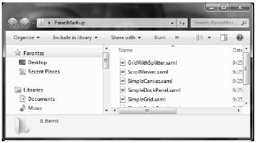
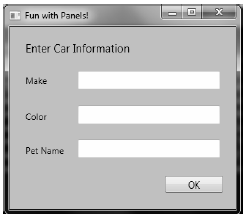
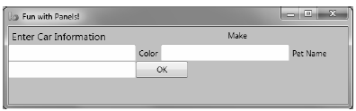
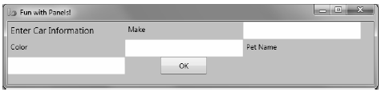
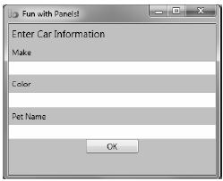
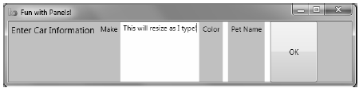
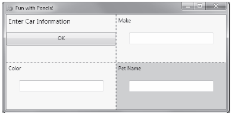
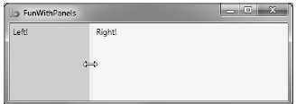
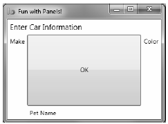
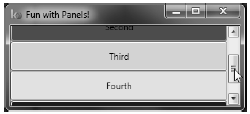

A WPF application invariably contains a good number of UI elements (e.g., user input controls, graphical content, menu systems, and status bars) that need to be well organized within various windows. Once you place the UI elements, you need to make sure they behave as intended when the end user resizes the window or possibly a portion of the window (as in the case of a splitter window). To ensure your WPF controls retain their position within the hosting window, you can take advantage of a good number of panel types.
When you declare a control directly inside a window that doesn’t use panels, the control is positioned dead-center in the container. Consider the following simple window declaration, which contains a single Button control. Regardless of how you resize the window, the UI widget is always equidistant from all four sides of the client area:
<!-- This button is in the center of the window at all times--> <Window x:Class="MyWPFApp.MainWindow" xmlns="http://schemas.microsoft.com/winfx/2006/xaml/presentation" xmlns:x="http://schemas.microsoft.com/winfx/2006/xaml" Title="Fun with Panels!" Height="285" Width="325"> <Button x:Name="btnOK" Height = "100" Width="80" Content="OK"/> </Window>
You might also recall that if you attempt to place multiple elements directly within the scope of a <Window>, you will receive markup and compile-time errors. The reason for these errors is that a window (or any descendant of ContentControl for that matter) can assign only a single object to its Content property:
<!-- Error! Content property is implicitly set more than once!--> <Window x:Class="MyWPFApp.MainWindow" xmlns="http://schemas.microsoft.com/winfx/2006/xaml/presentation" xmlns:x="http://schemas.microsoft.com/winfx/2006/xaml" Title="Fun with Panels!" Height="285" Width="325"> <!-- Error! Two direct child elements of the <Window>! --> <Label x:Name="lblInstructions" Width="328" Height="27" FontSize="15" Content="Enter Information"/> <Button x:Name="btnOK" Height = "100" Width="80" Content="OK"/> </Window>
Obviously a window that can only contain a single control is of little use. When a window needs to contain multiple elements, those elements must be arranged within any number of panels. The panel will contain all of the UI elements that represent the window, after which the panel itself is used as the single object assigned to the Content property.
The System.Windows.Controls namespace provides numerous panels, each of which controls how sub-elements are maintained. You can use panels to establish how the controls behave if the end user resizes the window, if the controls remain exactly where they were placed at design time, if the controls reflow horizontally from left-to-right or vertically from top-to-bottom, and so forth.
You can also intermix panel controls within other panels (e.g., a DockPanel that contains a StackPanel of other items) to provide a great deal of flexibility and control. Table 28-2 documents the role of some commonly used WPF panel controls.
Table 28-2. Core WPF Panel Controls
|
Panel Control |
Meaning in Life |
|---|---|
|
Canvas |
Provides a classic mode of content placement. Items stay exactly where you put them at design time. |
|
DockPanel |
Locks content to a specified side of the panel (Top, Bottom, Left, or Right). |
|
Grid |
Arranges content within a series of cells, maintained within a tabular grid. |
|
StackPanel |
Stacks content in a vertical or horizontal manner, as dictated by the Orientation property. |
|
WrapPanel |
Positions content from left-to-right, breaking the content to the next line at the edge of the containing box. Subsequent ordering happens sequentially from top-to-bottom or from right-to-left, depending on the value of the Orientation property. |
In the next few sections, you will learn how to use these commonly used panel types by copying some predefined XAML data into the MyXamlPad.exe application you created in Chapter 27 (you could also load this data into kaxaml.exe, if you wish). You can find all these loose XAML files contained inside the PanelMarkup subfolder of your Chapter 28 code download folder (Figure 28-4).
Figure 28-4 You will be loading the supplied XAML data into your MyXamlPad.exe appliction to test various layouts
You will probably feel most at home with the Canvas panel because it allows for absolute positioning of UI content. If the end user resizes the window to an area that is smaller than the layout maintained by the Canvas panel, the internal content will not be visible until the container is stretched to a size equal to or larger than the Canvas area.
To add content to a Canvas, you begin by defining the required controls within the scope of the opening <Canvas> and closing </Canvas> tags. Next, specify the upper-left corner for each control; this is where the rendering should begin using the Canvas.Top and Canvas.Left properties. You can specify the bottom-right area indirectly in each control by setting its Height and Width properties, or directly by using the Canvas.Right and Canvas.Bottom properties.
To see Canvas in action, open the provided SimpleCanvas.xaml file using a text editor and copy the content into MyXamlPad.exe (or kaxaml.exe). You should see the following Canvas definition:
<Window xmlns="http://schemas.microsoft.com/winfx/2006/xaml/presentation" xmlns:x="http://schemas.microsoft.com/winfx/2006/xaml" Title="Fun with Panels!" Height="285" Width="325"> <Canvas Background="LightSteelBlue"> <Button x:Name="btnOK" Canvas.Left="212" Canvas.Top="203" Width="80" Content="OK"/> <Label x:Name="lblInstructions" Canvas.Left="17" Canvas.Top="14" Width="328" Height="27" FontSize="15" Content="Enter Car Information"/> <Label x:Name="lblMake" Canvas.Left="17" Canvas.Top="60" Content="Make"/> <TextBox x:Name="txtMake" Canvas.Left="94" Canvas.Top="60" Width="193" Height="25"/> <Label x:Name="lblColor" Canvas.Left="17" Canvas.Top="109" Content="Color"/> <TextBox x:Name="txtColor" Canvas.Left="94" Canvas.Top="107" Width="193" Height="25"/> <Label x:Name="lblPetName" Canvas.Left="17" Canvas.Top="155" Content="Pet Name"/> <TextBox x:Name="txtPetName" Canvas.Left="94" Canvas.Top="153" Width="193" Height="25"/> </Canvas> </Window>
Clicking your View Xaml button causes the following window display on the screen (Figure 28-5).
Figure 28-5 The Canvas layout manager allows for absolute positioning of content
Note that the order you declare content within a Canvas is not used to calculate placement; instead, placement is based on the control’s size and the Canvas.Top, Canvas.Bottom, Canvas.Left, and Canvas.Right properties.
Note If sub-elements within a Canvas do not define a specific location using attached property syntax (e.g. Canvas.Left and Canvas.Top), they automatically attach to the extreme upper-left corner of Canvas.
Using the Canvas type might seem like the preferred way to arrange content (because it feels so familiar), but this approach does suffer from some limitations. First, items within a Canvas do not dynamically resize themselves when applying styles or templates (e.g., their font sizes are unaffected). Second, the Canvas will not attempt to keep elements visible when the end user resizes the window to a smaller surface.
Perhaps the best use of the Canvas type is for positioning graphical content. For example, if you were building a custom image using XAML, you certainly would want the lines, shapes, and text to remain in the same location, rather than see them dynamically repositioned as the user resizes the window! You’ll revisit Canvas in the next chapter when you examine WPF’s graphical rendering services.
A WrapPanel allows you to define content that will flow across the panel as the window is resized. When positioning elements in a WrapPanel, you do not specify top, bottom, left, and right docking values as you typically do with Canvas. However, each sub-element is free to define a Height and Width value (among other property values) to control its overall size in the container.
Because content within a WrapPanel does not dock to a given side of the panel, the order in which you declare the elements is important (content is rendered from the first element to the last). If you were to load the XAML data found within the SimpleWrapPanel.xaml file, you would find it contains the following markup (enclosed within a <Window> definition):
<WrapPanel Background="LightSteelBlue"> <Label x:Name="lblInstruction" Width="328" Height="27" FontSize="15" Content="Enter Car Information"/> <Label x:Name="lblMake" Content="Make"/> <TextBox x:Name="txtMake" Width="193" Height="25"/> <Label x:Name="lblColor" Content="Color"/> <TextBox x:Name="txtColor" Width="193" Height="25"/> <Label x:Name="lblPetName" Content="Pet Name"/> <TextBox x:Name="txtPetName" Width="193" Height="25"/> <Button x:Name="btnOK" Width="80" Content="OK"/> </WrapPanel>
When you load this markup, the content looks out of sorts as you resize the width because it flows from left-to-right across the window (see Figure 28-6).
Figure 28-6 Content in a WrapPanel behaves much like a traditional HTML page
By default, content within a WrapPanel flows from left-to-right. However, if you change the value of the Orientation property to Vertical, you can have content wrap in a top-to-bottom manner:
<WrapPanel Orientation ="Vertical">
You can declare a WrapPanel (as well as some other panel types) by specifying ItemWidth and ItemHeight values, which control the default size of each item. If a sub-element does provide its own Height and/or Width value, it will be positioned relative to the size established by the panel. Consider the following markup:
<WrapPanel ItemWidth ="200" ItemHeight ="30"> <Label x:Name="lblInstruction" FontSize="15" Content="Enter Car Information"/> <Label x:Name="lblMake" Content="Make"/> <TextBox x:Name="txtMake"/> <Label x:Name="lblColor" Content="Color"/> <TextBox x:Name="txtColor"/> <Label x:Name="lblPetName" Content="Pet Name"/> <TextBox x:Name="txtPetName"/> <Button x:Name="btnOK" Width ="80" Content="OK"/> </WrapPanel>
When you see this code rendered, you find the output shown in Figure 28-7 (notice the size and position of the Button control, which has specified a unique Width value).
Figure 28-7 A WrapPanel can establish the width and height of a given item
As you might agree after looking at Figure 28-7, a WrapPanel is not typically the best choice for arranging content directly in a window because its elements can become scrambled as the user resizes the window. In most cases, a WrapPanel will be a sub-element to another panel type, allowing a small area of the window to wrap its content when resized (e.g., a Toolbar control).
Like a WrapPanel, a StackPanel control arranges content into a single line that can be oriented horizontally or vertically (the default), based on the value assigned to the Orientation property. The difference, however, is that the StackPanel will not attempt to wrap the content as the user resizes the window. Rather, the items in the StackPanel will simply stretch (based on their orientation) to accommodate the size of the StackPanel itself. For example, the SimpleStackPanel.xaml file contains markup that results in the output shown in Figure 28-8:
<StackPanel Background="LightSteelBlue"> <Label x:Name="lblInstruction" FontSize="15" Content="Enter Car Information"/> <Label x:Name="lblMake" Content="Make"/> <TextBox Name="txtMake"/> <Label x:Name="lblColor" Content="Color"/> <TextBox x:Name="txtColor"/> <Label x:Name="lblPetName" Content="Pet Name"/> <TextBox x:Name="txtPetName"/> <Button x:Name="btnOK" Width ="80" Content="OK"/> </StackPanel>
Figure 28-8 Vertical stacking of content
If you assign the Orientation property to Horizontal as follows, the rendered output will match that shown in Figure 28-9:
<StackPanel Orientation ="Horizontal">
Figure 28-9 Horizontal stacking of content
Again, as is the case with the WrapPanel, you will seldom want to use a StackPanel to arrange content directly within a window. Instead, you’ll be better off using StackPanel as a subpanel to a master panel.
Of all the panels provided with the WPF APIs, Grid is far and away the most flexible. Like an HTML table, the Grid can be carved up into a set of cells, each one of which provides content. When defining a Grid, you perform three steps:
Note If you do not define any rows or columns, the <Grid> defaults to a single cell that fills the entire surface of the window. Furthermore, if you do not assign a cell value for a sub-element within a <Grid>, it automatically attaches to column 0, row 0.
You achieve the first two steps (defining the columns and rows) by using the <Grid.ColumnDefinitions> and <Grid.RowDefinitions> elements, which contain a collection of <ColumnDefinition> and <RowDefinition> elements, respectively. Each cell within a grid is indeed a true .NET object, so you can configure the look–and-feel and behavior of each cell as you see fit.
Here is a <Grid> definition (that you can find in the SimpleGrid.xaml file) that arranges your UI content as shown in Figure 28-10:
<Grid ShowGridLines ="True" Background ="AliceBlue"> <!-- Define the rows/columns --> <Grid.ColumnDefinitions> <ColumnDefinition/> <ColumnDefinition/> </Grid.ColumnDefinitions> <Grid.RowDefinitions> <RowDefinition/> <RowDefinition/> </Grid.RowDefinitions> <!-- Now add the elements to the grid's cells--> <Label x:Name="lblInstruction" Grid.Column ="0" Grid.Row ="0" FontSize="15" Content="Enter Car Information"/> <Button x:Name="btnOK" Height ="30" Grid.Column ="0" Grid.Row ="0" Content="OK"/> <Label x:Name="lblMake" Grid.Column ="1" Grid.Row ="0" Content="Make"/> <TextBox x:Name="txtMake" Grid.Column ="1" Grid.Row ="0" Width="193" Height="25"/> <Label x:Name="lblColor" Grid.Column ="0" Grid.Row ="1" Content="Color"/> <TextBox x:Name="txtColor" Width="193" Height="25" Grid.Column ="0" Grid.Row ="1" /> <!-- Just to keep things interesting, add some color to the pet name cell --> <Rectangle Fill ="LightGreen" Grid.Column ="1" Grid.Row ="1" /> <Label x:Name="lblPetName" Grid.Column ="1" Grid.Row ="1" Content="Pet Name"/> <TextBox x:Name="txtPetName" Grid.Column ="1" Grid.Row ="1" Width="193" Height="25"/> </Grid>
Notice that each element (including a light green Rectangle element thrown in for good measure) connects itself to a cell in the grid using the Grid.Row and Grid.Column attached properties. By default, the ordering of cells in a grid begins at the upper left, which you specify using Grid.Column="0" Grid.Row="0". Given that your grid defines a total of four cells, you can identify the bottom-right cell using Grid.Column="1" Grid.Row="1".
Figure 28-10 The Grid panel in action
Grid objects can also support splitters. As you might know, splitters allow the end user to resize rows or columns of a grid type. As this is done, the content within each resizable cell will reshape itself based on how the items have been contained. Adding splitters to a Grid is easy to do; you simply define the <GridSplitter> control, using attached property syntax to establish which row or column it affects.
Be aware that you must assign a Width or Height value (depending on vertical or horizontal splitting) for the splitter to be visible on the screen. Consider the following simple Grid type with a splitter on the first column (Grid.Column = "0"). The contents of the provided GridWithSplitter.xaml file look like this:
<Grid Background ="AliceBlue"> <!-- Define columns --> <Grid.ColumnDefinitions> <ColumnDefinition Width ="Auto"/> <ColumnDefinition/> </Grid.ColumnDefinitions> <!-- Add this label to cell 0 --> <Label x:Name="lblLeft" Background ="GreenYellow" Grid.Column="0" Content ="Left!"/> <!-- Define the splitter --> <GridSplitter Grid.Column ="0" Width ="5"/> <!-- Add this label to cell 1 --> <Label x:Name="lblRight" Grid.Column ="1" Content ="Right!"/> </Grid>
First and foremost, notice that the column that will support the splitter has a Width property of Auto. Next, notice that the <GridSplitter> uses attached property syntax to establish which column it is working with. If you were to view this output, you would find a five-pixel splitter that allows you to resize each Label. Note that the content fills up the entire cell because you have not specified Height or Width properties for either Label (see Figure 28-11).
Figure 28-11 Grid types containing splitters
DockPanel is typically used as a master panel that contains any number of additional panels for grouping related content. DockPanels use attached property syntax (as seen with the Canvas or Grid types) to control where each item docks itself within the DockPanel.
The SimpleDockPanel.xaml file defines a simple DockPanel definition that results in the output shown in Figure 28-12:
<DockPanel LastChildFill ="True"> <!-- Dock items to the panel --> <Label x:Name="lblInstruction" DockPanel.Dock ="Top" FontSize="15" Content="Enter Car Information"/> <Label x:Name="lblMake" DockPanel.Dock ="Left" Content="Make"/> <Label x:Name="lblColor" DockPanel.Dock ="Right" Content="Color"/> <Label x:Name="lblPetName" DockPanel.Dock ="Bottom" Content="Pet Name"/> <Button x:Name="btnOK" Content="OK"/> </DockPanel>
Figure 28-12 A simple DockPanel
Note If you add multiple elements to the same side of a DockPanel, they will stack along the specified edge in the order that they are declared.
The benefit of using DockPanel types is that, as the user resizes the window, each element remains connected to the specified side of the panel (through DockPanel.Dock). Also notice that the opening <DockPanel> tag sets the LastChildFill attribute to true. Given that the Button control has not specified any DockPanel.Dock value, it will therefore be stretched within the remaining space.
It is worth pointing out the WPF supplies a ScrollViewer class, which provides automatic scrolling behaviors for data within panel objects. The ScrollViewer.xaml file defines the following:
<ScrollViewer> <StackPanel> <Button Content ="First" Background = "Green" Height ="40"/> <Button Content ="Second" Background = "Red" Height ="40"/> <Button Content ="Third" Background = "Pink" Height ="40"/> <Button Content ="Fourth" Background = "Yellow" Height ="40"/> <Button Content ="Fifth" Background = "Blue" Height ="40"/> </StackPanel> </ScrollViewer>
You can see the result of the previous XAML definition in Figure 28-13.
Figure 28-13 Working with the ScrollViewer type
As you would expect, each panel provides numerous members that allow you to fine-tune content placement. On a related note, many WPF controls support two properties of interest (Padding and Margin) that allow the control itself to inform the panel how it wishes to be treated. Specifically, the Padding property controls how much extra space should surround the interior control, while Margin controls the extra space around the exterior of a control.
This wraps up this chapter’s look at the major panel types of WPF, as well as the various ways they position their content. Next, you will see an example that uses nested panels to create a layout system for a main window.